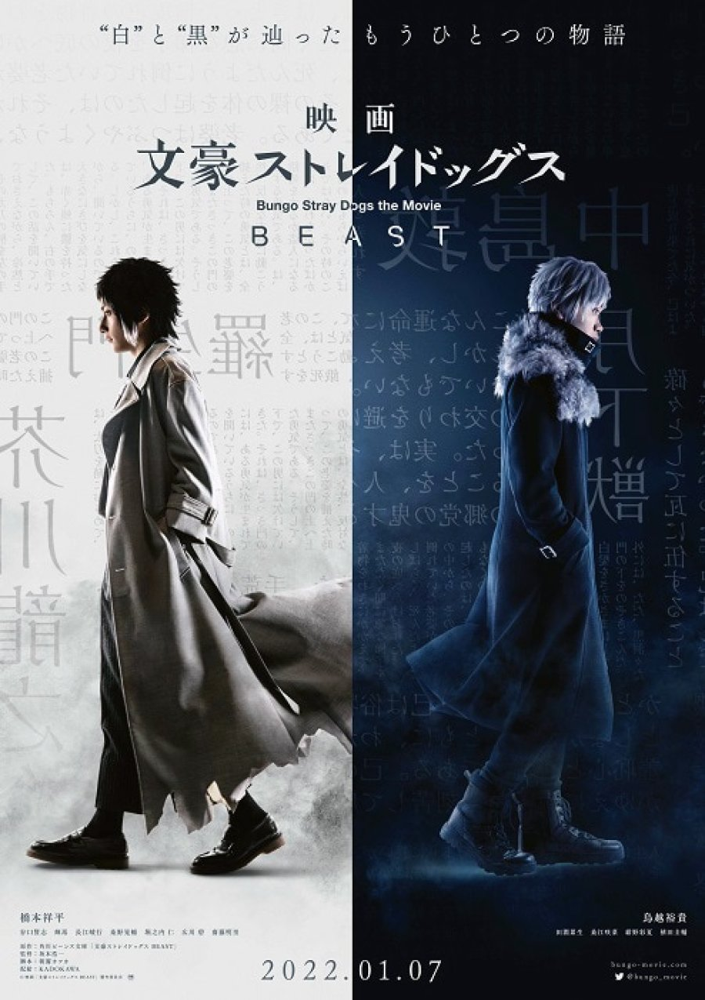

Bungo Stray Dogs The Movie: Beast
Esta es una pelicula live-action publicada el 7 de enero del 2022. DIrigida por Koichi Sakamoto y escrita por Kafka Asagiri. Basada en la novela ligera"Bungou Stray Dogs: Beast" , esta nueva pelicula nos presenta un universo alternativo al de la franquicia.
SIPNOSIS
La pelicula cuenta la vida de Akutagawa Ryunosuke 4 años despues de que un hombre de traje negro secuestrara a su hermana. Akutagawa será acogido en la Agencia de detectives, la cual lo ayudara a buscar a su familiar perdido.

REPARTO
Shohei Hashimoto como Ryunosuke Akutagawa
Masashi Taniguchi como Sakunosuke Oda
Teruma como Doppo Kunikida
Ryōki Nagae como Ranpo Edogawa
Kōsuke Kuwano como Junichirō Tanizaki
Hitoshi Horinouchi como Kenji Miyazawa
Ao Hirokawa como Akiko Yosano
Akari Saito como Naomi Tanizaki
Rui Tabuchi como Osamu Dazai
Sakina Kuwae como Kyōka Izumi
Ayaka Konno como Gin
Keisuke Ueda como Chuya Nakahara
Mitsu Murata como Tatsuhiko Shibusawa
Yuta Kishimoto como Fyodor D.
Keisuke Minami como director del orfanato
Hirofumi Araki como Ango Sakaguchi